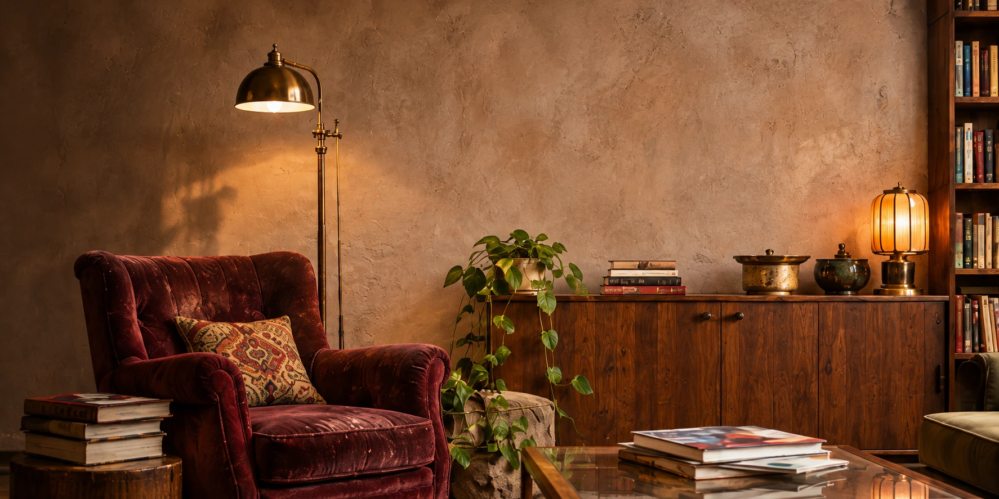

Artes Face
€280
Try in this room ↗ARRIVE IN YOUR WORLD
Find a work. See where it belongs.
Browse the collection ↗THE COLLECTION
THE ORIGIN
I started experimenting with AI images in 2017 as a personal project, alongside my work with AI and data modelling. I was curious about what was happening, and had a feeling it could become something much bigger.
I believe AI art will eventually be recognized as a style of its own. Looking back, this period may turn out to be a major turning point in art history: a change in how people make images, with machines becoming part of the creative process.
Creative jobs are changing too. I believe there will still be a place for people with taste and judgement. Prompting takes practice, but so does recognizing when an image is worth keeping, or knowing what to change when it falls short.
For me, the purpose is still to create an experience for another person. That’s what interests me about these experiments: what someone else might see in them, and whether an image stays with them after they’ve looked away.
